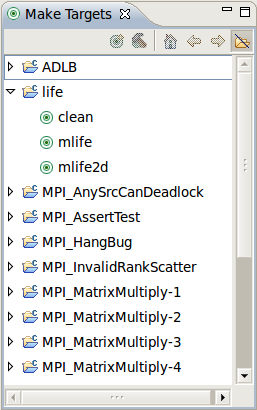
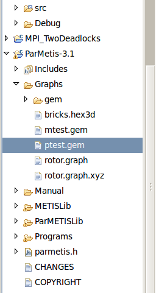
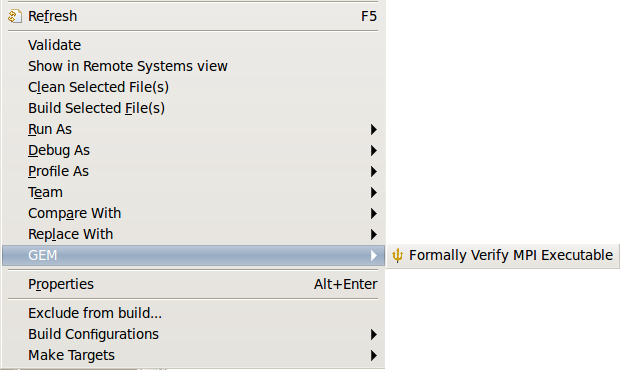

|
|
Makefile Support |
GEM supports CDT C and C++ Makefile projects with a minimum effort required on the part of the programmer. Just some minor modifications to your project's Makefiles and you'll be able to use GEM with your Makefile Projects as well as your Managed Build Projects.
The following are the necessary procedures to modify your CDT Makefile Project so that it can be verified and analyzed by GEM. If you are creating a project from scratch, make sure to start with a new Makefile Project and not a Managed-Build Project!
# Which compiler to use
# CC = mpicc <-- comment this out
# For MPI C applications
CC = ispcc <-- add this for C compilation (ispcc is a wrapper for mpicc)
# For MPI C++ applications
CXX = ispCC <-- add this for C++ compilation (ispCC is a wrapper for mpicxx)
SOURCEPATH = $(shell pwd) # defining this will give the compiler the fully qualified path to each file encountered
$(CC) $(CFLAGS) -c $(SOURCEPATH)/$*.c # add this to your build rules
$(BINDIR)/mtest.gem$(VERNUM): $(MESHTESTOBJS) $(ISPOBJS)



Back to Top | Back to Table of Contents
School of Computing * 50 S. Central Campus Dr. Rm. 3190 * Salt Lake City, UT
84112 * isp-dev@cs.utah.edu
License